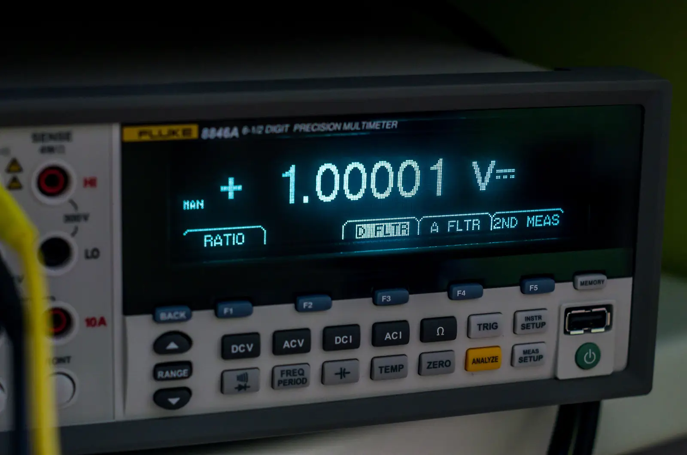
Wzorcowanie mierników elektrycznych w Sanoku
Porównujemy Państwa miernik z kalibratorem odniesionym do wzorców krajowych lub międzynarodowych i wystawiamy świadectwo wzorcowania z pełnym zapisem pomiarów.
Miernik można przesłać kurierem. Odbiór przesyłki możemy też zamówić za Państwa.
Mierniki, które wzorcujemy
Wzorcujemy większość mierników parametrów instalacji elektrycznych. Przed wysyłką prosimy o krótkie zapytanie, żeby potwierdzić możliwość wzorcowania konkretnego modelu.
- mierniki impedancji pętli zwarcia
- mierniki rezystancji pętli zwarcia
- mierniki impedancji oraz rezystancji linii
- mierniki rezystancji uziemienia i gruntu
- mierniki rezystancji izolacji
- mierniki parametrów wyłączników różnicowoprądowych (RCD)
- mierniki ciągłości przewodów ochronnych i wyrównawczych
- mierniki wielofunkcyjne instalacji elektrycznych
- mierniki bezpieczeństwa sprzętu elektrycznego
- mierniki prądów upływu
- woltomierze, amperomierze, omomierze
- multimetry wielofunkcyjne i uniwersalne
Wystarczy podać producenta i model miernika. Odpowiemy, czy i w jakim terminie wykonamy wzorcowanie.
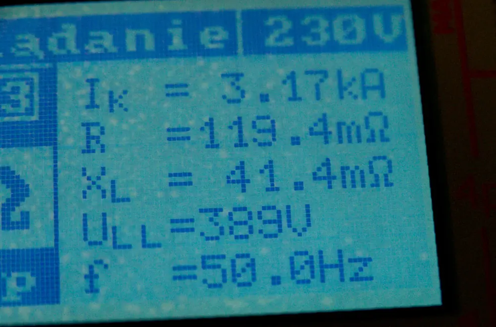
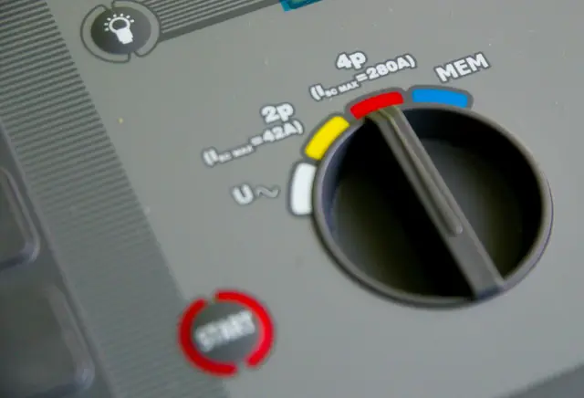
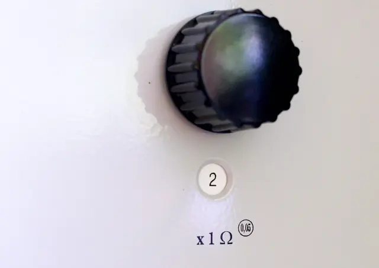
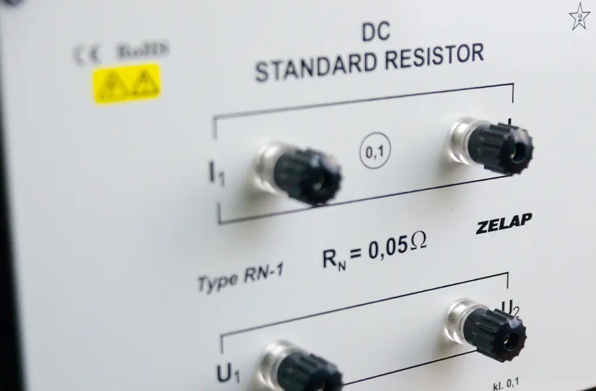
Co dostają Państwo razem z miernikiem
Świadectwo wzorcowania
Oprócz informacji opisowych zawiera pełny zapis przeprowadzonych pomiarów wraz z oszacowanymi niepewnościami rozszerzonymi, opracowanymi na podstawie dokumentu EA-4/02.
Forma zgodna z wytycznymi PCA
Forma i treść świadectwa zostały opracowane tak, aby spełniały wytyczne Polskiego Centrum Akredytacji przeznaczone dla laboratoriów akredytowanych.
Ocena zgodności z danymi producenta
Gdy dane techniczne miernika są dostępne, świadectwo zawiera ocenę zgodności z wymaganiami metrologicznymi deklarowanymi przez producenta.
Termin, także ekspresowy
Wzorcowanie wykonujemy w możliwie krótkim czasie. W razie potrzeby w terminie ekspresowym, po indywidualnym uzgodnieniu dostarczenia i odbioru.
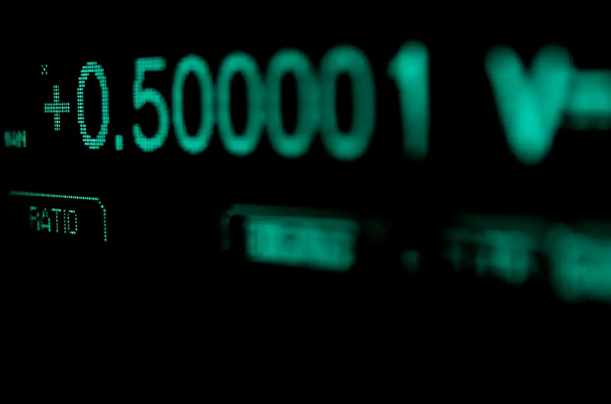
Porównanie z wzorcem
Wzorcowanie, zamiennie nazywane kalibracją, polega na porównaniu parametrów miernika z parametrami kalibratora, który ma odniesienie do wzorców krajowych lub międzynarodowych. Każde wzorcowanie wykonujemy zgodnie z wymaganiami instrukcji zakładowej wzorcowania przyrządów pomiarowych.
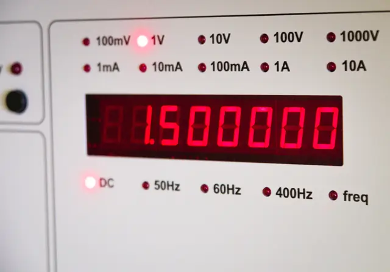
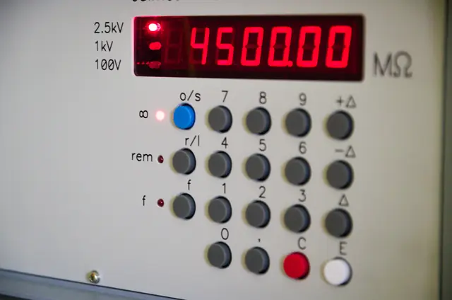
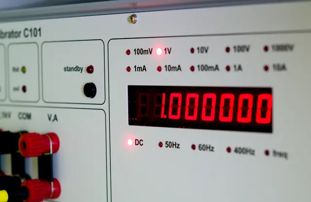
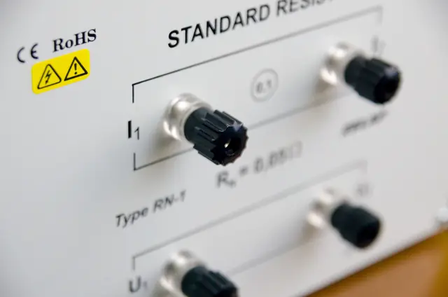
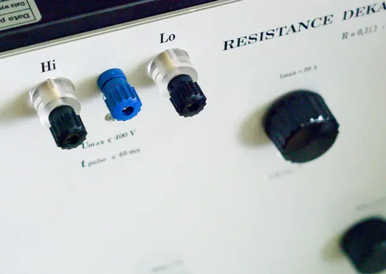
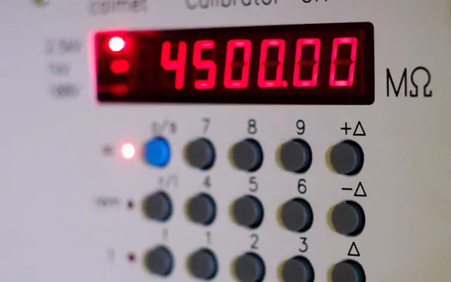
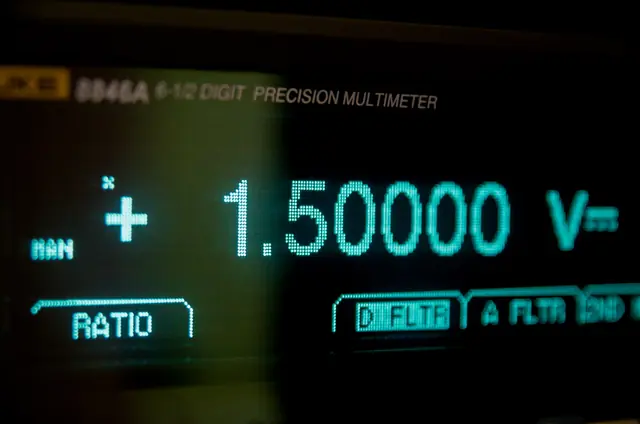
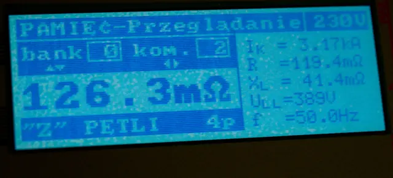
Jak przesłać miernik do wzorcowania
Zapytaj o model
Przez formularz, e-mail lub telefon. Potwierdzimy, czy wzorcujemy miernik danego typu.
Wypełnij zlecenie
Formularz zlecenia wykonania usługi (PDF lub DOCX) koniecznie dołącz do przesyłki.
Dołącz przewody i cęgi
Prosimy o przewody pomiarowe, zwłaszcza do pomiarów impedancji pętli zwarcia, oraz cęgi prądowe używane np. przy rezystancji uziemienia. Długie przewody i sondy (szpilki) do uziemień nie są potrzebne.
Naładuj baterie
Naładowane baterie lub akumulatory skracają termin. Przy mniej popularnych miernikach dołącz dane techniczne lub instrukcję obsługi.
Zapakuj starannie i wyślij
Adres do wysyłki: Desinger Krzysztof Kurdyła, ul. E. Dembowskiego 7/27, 38-500 Sanok
Współpraca partnerska
ELEKTROPOMIAR, akredytowane laboratorium wysokich napięć
Firma z Jarosławia, działająca od 1982 roku, z laboratorium do profesjonalnego badania sprzętu dielektrycznego.
Jarosław, ul. Szczytniańska 3, tel. 604 579 641
Kraków, ul. Mierzeja Wiślana 6, tel. 790 227 242
Zapytanie o wzorcowanie
Napisz, jaki miernik chcesz wzorcować. Odpowiemy, czy wykonamy wzorcowanie i jak najszybciej je zorganizować.
Laboratorium Przyrządów Pomiarowych
38-500 Sanok